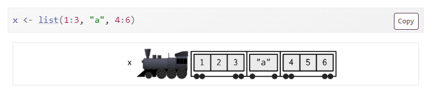
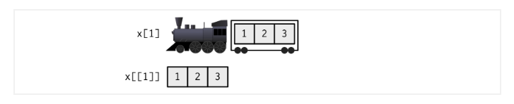
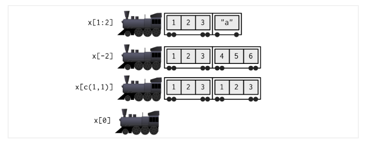
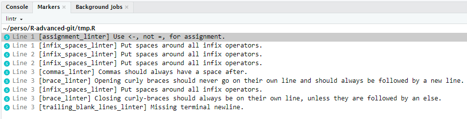

Alt+Maj+K sous Windows).Options à configurer recommandées
En R, tout est objet.
Un objet est l’association d’un nom et d’une valeur. Techniquement, on associe une valeur à un nom.
Plusieurs opérateurs pour affecter une valeur :
Contrainte sur les noms : ils ne peuvent commencer par un _ ou un chiffre.
Il existe 6 types primitifs en R
character, integer, numeric, logical,
ainsi que deux types plus rares, raw et complex.
Fonctions de coercition de type (type coercion) : as.*
Facteur (factor) :
Facteur ordonné (ordered) :
Mais aussi Date, POSIXct, POSIXlt, data.frame, matrix, array …
Les vecteurs sont omniprésents en R. Il en existe deux types :
logical, integer, numeric, characterlistPour créer un vecteur de type atomique :
Certains attributs de vecteurs sont très communs et très importants :
dimnamesclassObjets S3
Nous détaillerons la notion d’objets S3 lors du troisième cours
[[, [, et $.L’opérateur [ permet de sélectionner plusieurs éléments d’un vecteur.
L’opérateur [ permet de sélectionner plusieurs éléments d’un vecteur.
Pour des listes :
[ renvoie toujours une liste[[ renvoie un élément de la liste$ renvoie un élément de la liste si la liste est nommée


if, else, else if, ifelse, switchfor, while, repeatnext, breakMots réservés
Tous les noms ci-dessus sont des noms réservés par R et ne peuvent pas être utilisés pour nommer un objet, tout comme function, NA, Inf, etc. Voir ?reserved.
Programmation fonctionnelle
Nous verrons lors du troisième cours l’introduction des fonctions *apply ou map_* qui sont complémentaires aux boucles for.
# condition: vecteur logique de taille 1
a <- if (condition) 1 else 2
# if / else if / else
if (b == "a") {
a <- ".."
} else if (b == "b") {
a <- "autre chose"
} else {
stop("error")
}
# switch
switch(b,
a = "..",
b = "autre chose",
stop("error"))
# ifelse vectorisé
ifelse(test = c(TRUE, TRUE, FALSE), "a", "b")while, repeat, next, breakwhile, repeat, next, breakTips
break stoppe les itérationsnext permet de passer à l’itération suivanteLes fonctions permettent d’automatiser et de mutualiser des tâches courantes.
Fonctions, fonctions génériques
Nous détaillerons le fonctionnement et les bonnes pratiques d’écriture des fonctions lors du troisième cours.
Pour charger une librairie externe, nous utilisons la fonction library()
Package
Nous détaillerons comment construire un package lors du quatrième cours.
Attention
Attention, tous les packages ne sont pas de qualité égale. Certains peuvent même être potentiellement dangereux et corrompus. Il faut apprendre à détecter des librairies peu fiables.
L’enfer des dépendances
Les librairies externes facilitent et accélèrent grandement les études, mais créent aussi des vulnérabilités et des dépendances.
Info
Nous nous intéresserons à la gestion propre des dépendances lors du 5ème cours.
La fonction la plus importante de R : ?
Voir aussi rdocumentation.org
Fonction str()
#> 'data.frame': 32 obs. of 11 variables:
#> $ mpg : num 21 21 22.8 21.4 18.7 18.1 14.3 24.4 22.8 19.2 ...
#> $ cyl : num 6 6 4 6 8 6 8 4 4 6 ...
#> $ disp: num 160 160 108 258 360 ...
#> $ hp : num 110 110 93 110 175 105 245 62 95 123 ...
#> $ drat: num 3.9 3.9 3.85 3.08 3.15 2.76 3.21 3.69 3.92 3.92 ...
#> $ wt : num 2.62 2.88 2.32 3.21 3.44 ...
#> $ qsec: num 16.5 17 18.6 19.4 17 ...
#> $ vs : num 0 0 1 1 0 1 0 1 1 1 ...
#> $ am : num 1 1 1 0 0 0 0 0 0 0 ...
#> $ gear: num 4 4 4 3 3 3 3 4 4 4 ...
#> $ carb: num 4 4 1 1 2 1 4 2 2 4 ...Si vous rencontrez un problème, il existe avec une très grande probabilité quelqu’un l’ayant déjà rencontré et ayant posté un message sur Internet. Et il est probable que la solution existe aussi !
#> Error in if (x) {: la condition est de longueur > 1Parfois, le message n’est pas très “grand public”
#> Error in if (x) {: la condition est de longueur > 1Parfois, le message n’est pas très “grand public”
#> Error in data[[0L]]: objet de type 'closure' non indiçable#> Error in file(file, "rt"): impossible d'ouvrir la connexionIl est normal de faire des erreurs
Toujours prendre le temps de lire le message d’erreur, faire une recherche google associée… Un bug arrive rarement et les erreurs sont souvent stupides : typo, mauvais nom de variable, etc.
Guide de style de référence : https://style.tidyverse.org/index.html
Contrôlez la qualité de votre code en utilisant un linter, par exemple, lintr

Contrôlez la qualité de votre code en utilisant un linter, par exemple, lintr
lintr
S’intègre bien avec RStudio, il exite un addin. Le linter est aussi un outil utile pour la vérification automatique de code, notamment dans un processus d’intégration continue. Plus là dessus dans le cours n°2.
Corrigez automatiquement certaines erreurs de style, avec la librarie styler
Corrigez automatiquement certaines erreurs de style, avec la librarie styler
styler
Complémentaire du linter. Aussi en addin dans RStudio.